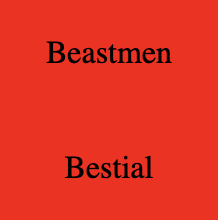
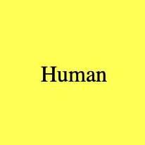
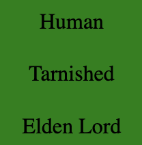

Programmet går ut på at du skal gjette en tilfeldig utvalgt 'boss' fra spillet Elden Ring.
Du kan velge fra en liste over alle mulige bosser.
Det er ikke mulig å gjette noe som ikke eksisterer i spillet (det er anbefalt å bruke listen).
Etter du har gjettet vil du få vite om det du gjettet var riktig, feil eller har noen fellestrekk.
 Rød betyr at alt er feil.
 Gul betyr at en eller flere (men ikke alle) av verdiene i ruten er riktig.
 Grønn betyr at alt i den ruten er riktig.